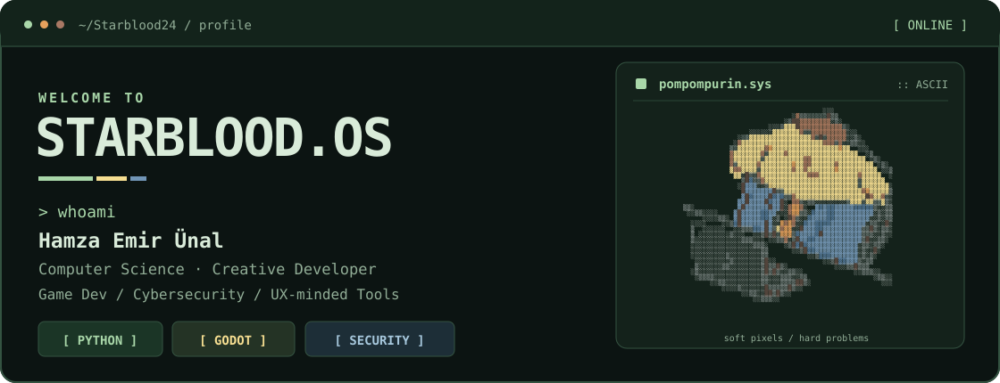
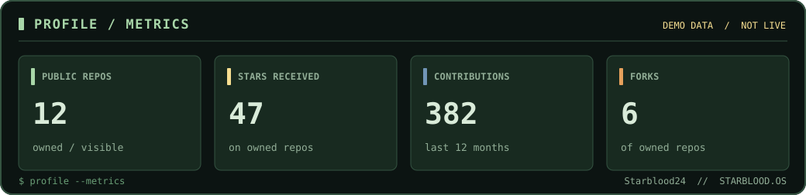
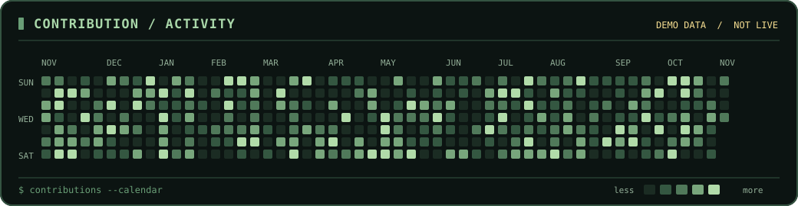
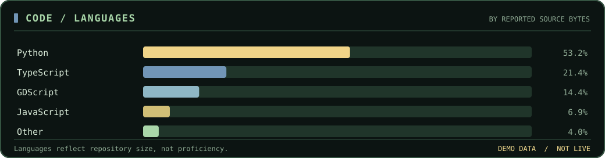
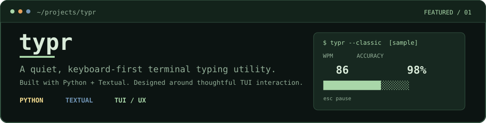
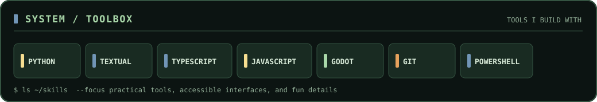
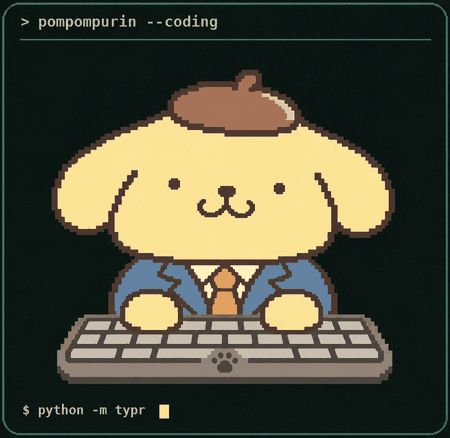

STARBLOOD.OS / README DESIGN PREVIEWLOCAL PREVIEW · DEMO DATA

> about.exe
Hi, I'm Emir — a Computer Science master's student at RWTH Aachen who likes building useful software with personality. I'm interested in game development, cybersecurity, developer tools and the little UX details that make an interface feel right.
> github --telemetry



Preview values and contributions are illustrative only. Published profile assets begin in a pending state and are populated by GitHub Actions using real API data.
> cat ~/featured/typr

> ls ~/toolbox

> ./pompompurin --idle

tiny companion, big projects.
Animated character derived from the original Pompompurin profile picture, rendered in colored Unicode glyphs.
[ gentle blink ] [ seamless loop ]